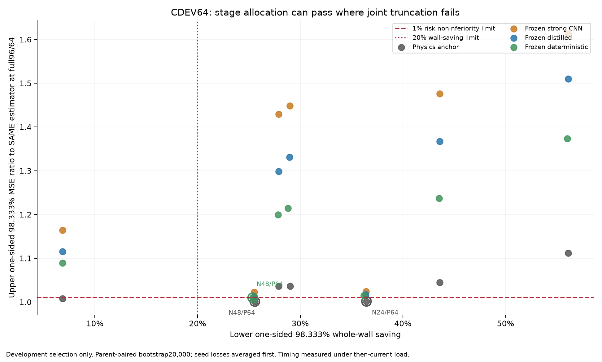
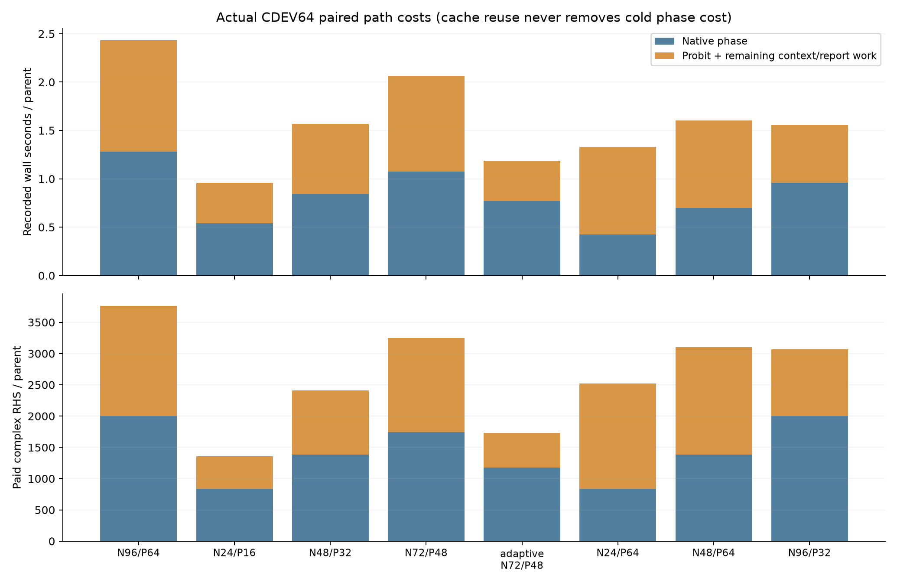
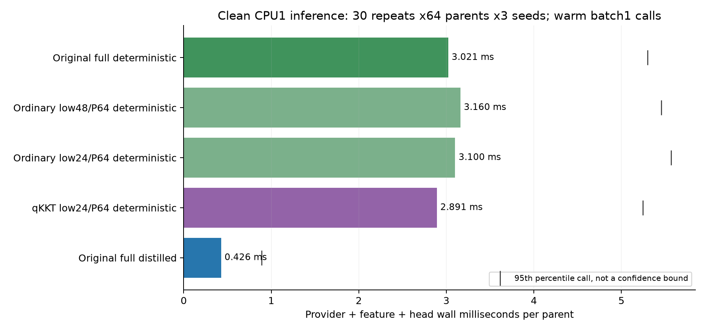

风险—成本前沿：C 开发部分
节省计算与保留材料图信息之间存在实际交换：便宜的物理图可能已经解释观测，却不足以给冻结学习头提供相同质量的局部特征。这里的 Pareto 图首先说明哪些开发方案同时保留任务风险与节省计算，不把低优化目标或小观测残差当作材料风险的替代品。
本文保留CDEV64开发时点的证据；D已完成。当前范围与强化控制见最终独立确认及裁决，不把旧开发门当作新确认。
图怎么读
横轴是实际锚点记录加当时 CPU1 头推理后，wall 节省的单侧 98.333% 下界；纵轴是相对同一种估计器完整 N96/P64，材料 MSE 比率的单侧上界。进入“横轴 ≥20%、纵轴 ≤1.01”的区域才通过 C 开发联合门。不同颜色拥有不同 full 风险，不能把颜色间的风险比率误认为相同绝对材料误差。

首轮同时截短 Native/Probit 的 4 个方案没有联合通过。Revision1 保留 Probit64 后，physics N24/P64、physics N48/P64，以及 frozen deterministic N48/P64 通过其各自开发门。Original distilled N24/P64、N48/P64 的风险上界分别为 1.017148、1.012124，仍然失败；阈值未调整。
保持不同基线的身份
| 完整或匹配系统 | CDEV64 全材料 MSE | 在本比较中的角色 |
|---|---|---|
| Original physics N96/P64 | 0.010720833 | physics 低成本比较的 full 参照 |
| Original frozen deterministic N96/P64 | 0.006353832 | deterministic 与 qKKT 的原始 full 参照 |
| Original frozen distilled N96/P64，原始训练 N1024 | 0.006666692 | compact-provider 新匹配头的外部参照 |
| 新 Full512，compact provider 冻结 | 0.006908786 | 同训练 N512 的配对 full 控制；并不替代 Original1024 |
| 新 Low512 N48/P32 | 0.006984981 | 对新 Full512 上界 1.036769；对 Original1024 上界 1.077751，均失败 |
| 新 Native512 Native96-only | 0.007485933 | 对新 Full512 上界 1.121563；对 Original1024 上界 1.164361，均失败 |
重训头使 N48/P32 的误差比冻结 compact 头更接近其 full 对照，但在保留的 1% 门下没有合格。新 Full512 自己相对 Original1024 的上界为 1.051693，也不能通过。训练样本数、provider、头参数数与 checkpoint 选择集均明示，不能把一条更弱的基线悄悄挪成前沿。
qKKT 候选的位置与控制
qKKT N24/P64 deterministic 在开发中相对 Original full deterministic 的风险上界为 1.008195，wall 节省下界 36.28%，因而进入开发联合门。其特征近似只替换反投影方向，既不伪造 J，也不产生免费物理求解。
这个结果仍不能证明 qKKT 的专属因果收益：同一 N24/P64 的 q 相对 ordinary actual-gradient，MSE 差 −7.476e-6 的配对区间 [−1.0471e-4,+8.9982e-5] 跨零。full-q、ordinary-low、零与负方向控制的地位保留；最终独立比较由根线程已经冻结的 D 方案完成。
成本轴不能省略的部分
C 的新增真实物理合计 2,605,928 复数 RHS：首轮锚点 800,112、Revision1 锚点 556,256、TRAIN512 low 锚点 1,249,048，以及 CDEV64 观测生成 512。9 个匹配头共使用 499.373 s 保守整段 MPS job 预约、185.994 s CPU；provider 更新为零。历史训练与历史缓存的冷成本另行保留。
独立干净 30-repeat CPU1 微计时共 72.942 s wall、0 新物理；warm 单 parent 的 provider+feature+head 平均为 full deterministic 3.021 ms、qKKT24/P64 deterministic 2.891 ms、full distilled 0.426 ms。图示微成本不含物理锚点；其小幅差异不能充当完整系统 wall 证据。


可复核材料与当前结论边界
这些资料支持对阶段分配和方向特征继续做已冻结的独立检查；它们没有把开发集选择升级为 D 确认，也没有抹去 Low512、Native512 与短 Probit 的失败。
直接 prior→Probit64/128 的简单强控制已另行冻结，本文生成时仍待执行。它不运行 Native optimizer，不改变 Probit MAP；若这条直接路径在开发集竞争或支配图中候选，最终前沿与 TAP/新意解释必须更新。该 pending 控制不是新增锁定 D arm，也没有当前结果可画成通过点。
R6最终范围补注
开发阶段原始数字与gate保持。新512噪声对象、普通direct-prior强对照、同窗口96路径计时及Full-q强化参考均已完成，见最终独立确认与最终裁决。原完整特征基线的确认通过，不等于对强化Full-q或所有计时窗口的相同门已经通过。